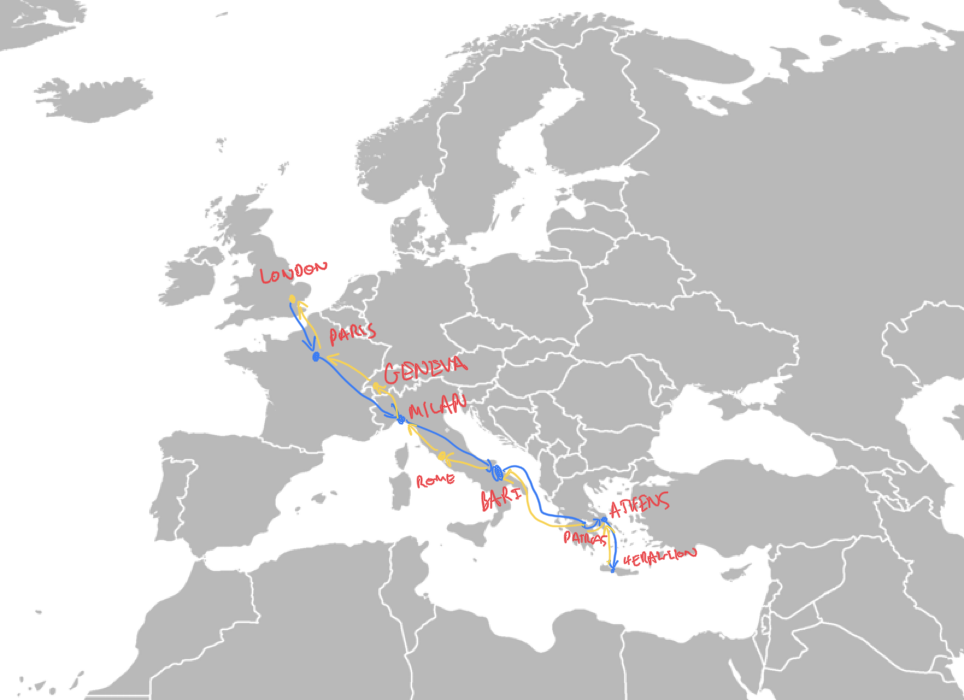

I was trying to cut down on flying, but also really wanted to go to this conference in Crete. So I did it by Train and Boat instead, and was also able to visit a lab in Geneva, a friend in Rome, and lots of nice tourists sites on the way. Strong recommend!
The journey takes a little while, here's a map of all the legs, all the info you need for this journey can be found on the amazing website, Seat61
Outbound: London -> Paris -> Milan (sleep) -> Bari -> Boat (sleep on boat) -> Patras -> Athens (stay) -> Boat (sleep on boat) -> Heraklion
Inbound: Heraklion -> Boat (sleep) -> Athens -> Patras -> Boat (sleep on boat) -> Bari -> Rome (stay) -> Milan (stay) -> Geneva (stay) -> Paris -> Boat (sleep-ish) -> London
Outbound:

Arrived in Bari after 2 days travel...
Mmmm the Acropolis in Athens, on day four. Impressive ancient greek scaffolding, almost looks modern. Plus guilty feelings about the elgin marbles (though I can't help but find it funny how they're described as worse than that time the acropolis was used as a gun powder store, then ignited by direct bombardment from an invading ottoman army)
Some impressive ruins
Finally made it to Heraklion..., day five of the trip!
Great week at the conference, then the return journey:
Arrive back in Athens and have breakfast in Plato's symposium!
Say goodbye to greece after a week or so, sail past Ithaca

Make it to Rome, which is just a great place. Terrible beard is on going... (I blame James and Xiao for persuasion...)

Hang out with Clementine, and eat a lot of pasta!

Some impressive site seeing

Swing through Milan, hitting up the cathedral

Before hitting up Geneva, to speak to the Pouget Lab

Look! The UN!

Before a last final terrible bus and boat journey back to London.